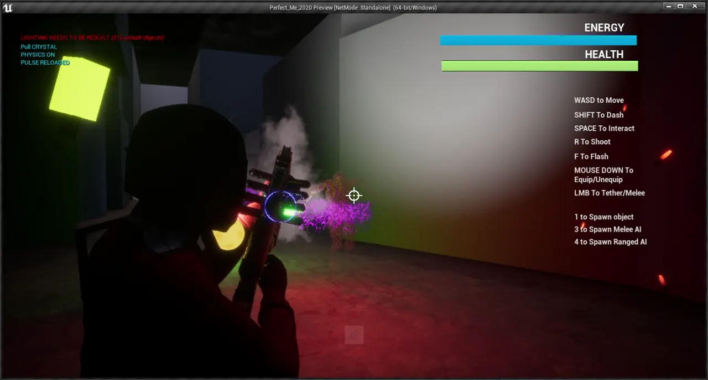
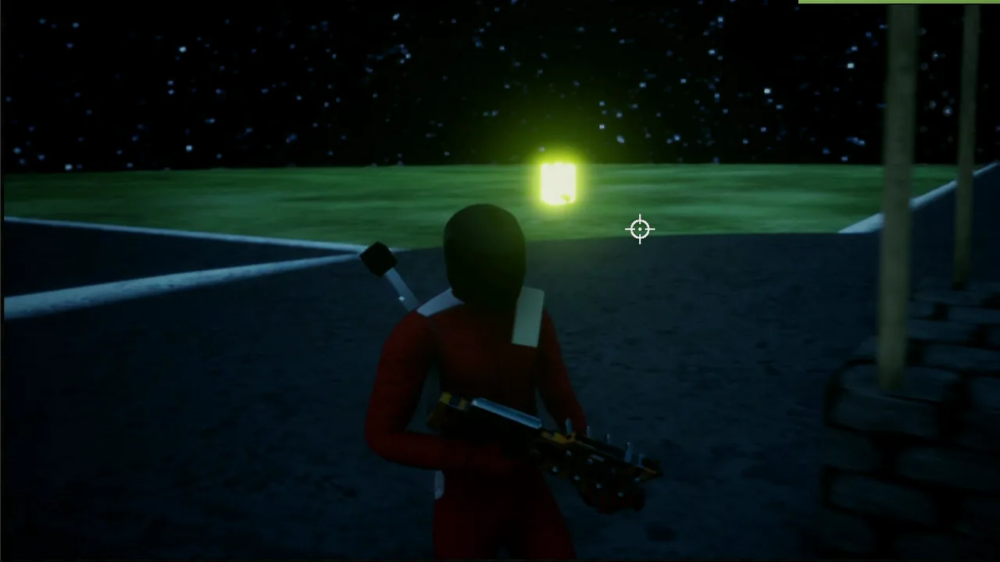
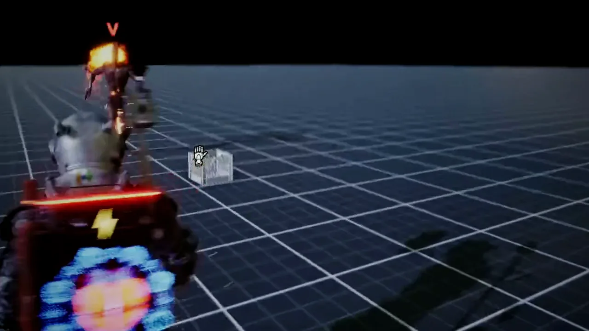
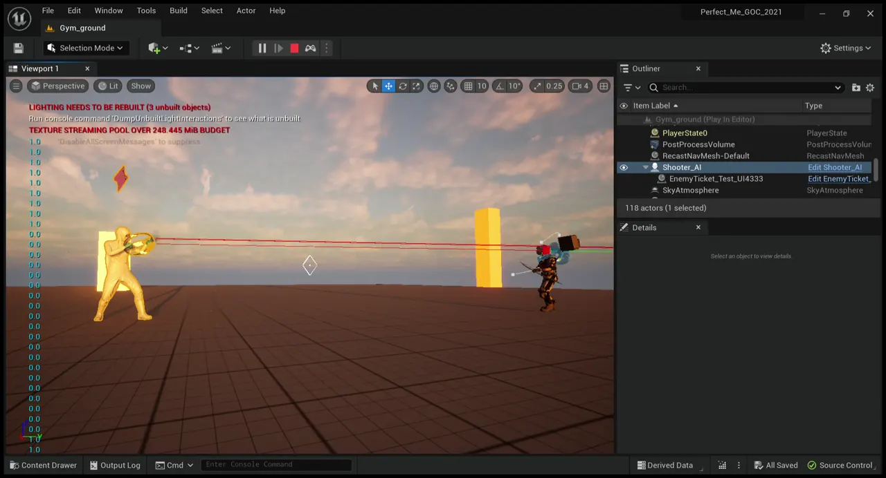
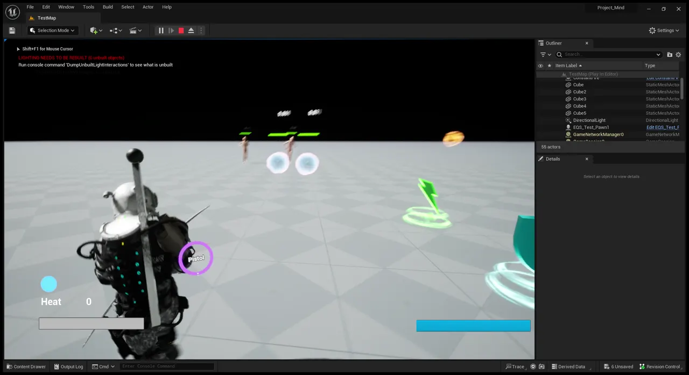
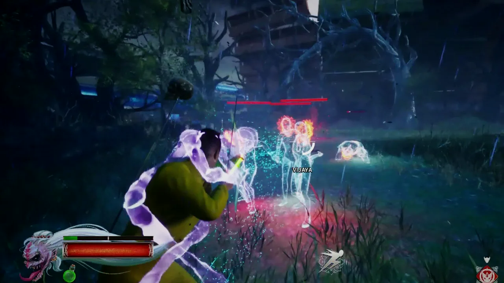
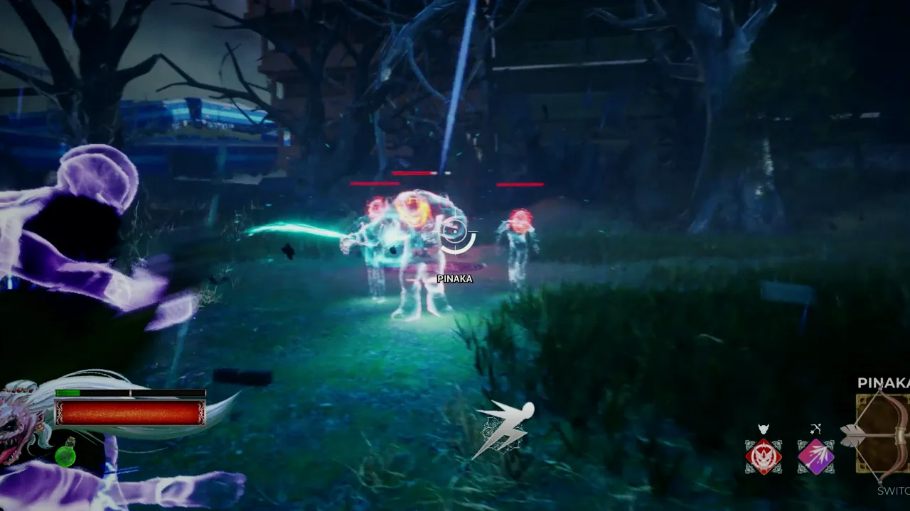
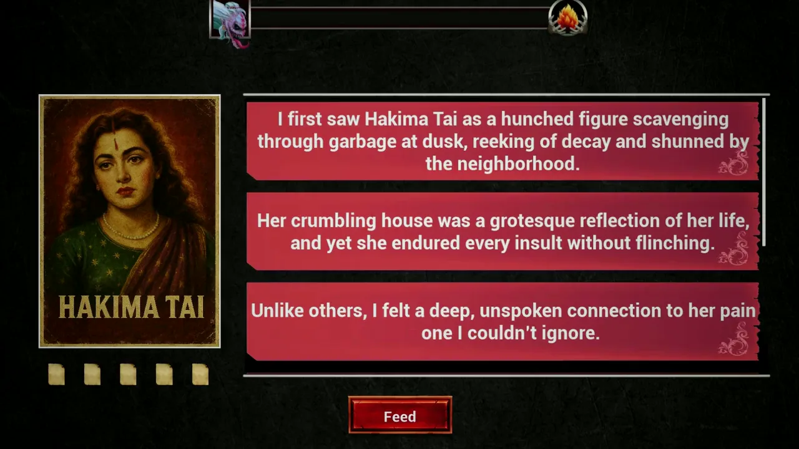

In this deep dive
- Five years of footage, from a grey test room in 2021 to the 2025 showcase level
- The combat director that decides which enemies may attack
- The stretching arm we cut, and the bow that replaced it
- The boon and story editors the designers filled themselves
- Why only Blueprints, and what I would do differently
A police officer, a spirit, and stories traded for powers
You play a police officer who comes home to his village in Himachal, where something strange has started to open. In the jungle he meets Vetal, a spirit, and they become partners.
You travel through corrupted places and collect the stories you find there. You feed each story to Vetal, he gives you a boon for it, and the boons are how you beat what’s waiting in the next fight. Run after run, like a roguelite.
The four of us started it in 2020, during the pandemic, working remotely. Later we were often in the same room. The game changed names three times.
- Perfect Me
- Project Ego
- Project Mind
- VETAL 26
It started as a top-down horror game
The first version was a top-down, isometric action-horror game in Unreal Engine 4. You could turn into other objects to slip past enemies. I knew Unity, and I learned Unreal on this project, so this year was mostly me finding out how things are done there.
A year of prototypes in a grey room
We turned it into a third-person action-adventure with melee combat and several enemy types. I spent the year prototyping mechanics in Blueprints, a lot of them in two or three different ways, bringing over whatever I knew from Unity. By the end of it I knew I could make any mechanic we wanted, even my own locomotion system. Not in the most optimal way, but I could.
That locomotion was built from free Mixamo animations and tutorials: blend spaces, montages, root motion and hand IK. It didn’t look good, and you can see that in the clips. Later we moved to the Advanced Locomotion System and changed its montages and blend spaces to fit our characters.



The stretching arm that became a bow
Most of 2022 went into combat. Melee got a blocking shield, hit sparks and fire attacks, and we added enemies that fire from range.
For a long time our main attack was an arm that stretched out like a cable. I modified Mixamo animations for it, cast a line from the camera to the centre of the screen, stretched a spline cable from the hand to that point and put damage colliders along the cable. We playtested it through a few iterations and it just wasn’t fun. At the end of 2022 we switched to a bow. It fit the story, and it gave us projectiles to design around.
Aiming a bow over the shoulder has its own problem. Something close to the player can block the line between the bow and the point the camera is aiming at. So the arrow uses two traces, one from the arrow along its forward direction and one from the camera through the centre of the screen, and it flies to where they meet. A leeway that the designers could tune still lets the arrow go to the screen centre when something blocks the bow’s own line. An enemy in the middle of the screen can always be hit.
Vetal arrived this year. He was a child actor attached to the player at first, and it looked buggy, because he floated through walls. I added a collision check that slides him from one side of the player to the other when something is in the way. Every 2022 clip below is from the melee builds. The bow shows up in the 2025 footage.



Fights were a mess, so I built a director
With more enemy types, group fights got hard to coordinate. If every enemy in an arena attacks at once, the player can’t read what’s happening. We needed combat to follow rules the player could understand.
So there is a combat manager, one Blueprint actor placed in each level, that acts as a director. An enemy may attack only while it holds a ticket. How many tickets exist is a variable the designers can change. It started at two attackers at once and was later tuned to two normal attacks and one special for the later stages.
Every enemy type has its own EQS query. It scores distance to its attack range, current distance, distance to the querier, visibility and, for ranged enemies, whether they have a clear shot. The director weighs each enemy’s scores into one queue and hands out tickets from the top, preferring mixed pairs. If three melee enemies want to attack, the first two get tickets and the third walks up to an attack position and waits. The moment a ticket frees up, it attacks. Each enemy’s own Behavior Tree handles everything else.
The enemies the director juggles: melee fighters, mid-range spitters and snipers. A flying enemy fires three projectiles that merge into a big laser, aimed at where you are about to be from your velocity, sweeping a little up and down along a line. A mini-boss does a three-hit combo, and its special is a run-up jump that smashes the ground around it.
After the director, the designers could set up each encounter themselves: how many waves, how long each wave lasts and which enemy types are in it. Combat could be controlled very easily per encounter, without me.


Designers added boons and stories without me
This was also the year the game got its final loop: collect stories, trade them to Vetal for boons, run after run. We renamed it Project Mind, and a new player character with spirit abilities replaced the old one.
I built the loop so the designers could fill it in themselves. A boon is a struct. A designer picks any stat in the game, says what the boon does to it, gives it a name and adds a row to a data table. Stories work the same way. A kahaani, a long story, is made of kathas, single paragraphs that the player collects, and the designers wrote their own in a story editor built on the same struct and data table pattern. That made it easy to playtest a lot of boon ideas.
A boon
- StatArrow type, Vetal, enemy, player
- EffectWhat it does to it
- NameWhat the player sees
- Made by
- The designers
- Built on
- A struct and a data table
A kahaani
- KathaOne paragraph
- KathaCollected later
- KathaAnd another
- Made by
- The designers
- Built on
- The same struct and data table pattern
An encounter
- WavesHow many
- LengthOf each wave
- Enemy typesIn each wave
- Made by
- The designers
- Tickets
- 2 normal, 1 special, tunable
Everything a designer could change without asking me

Off the test maps and into the forest
The design held in 2024, so the work went into finishing it. Vetal and the player reached their final designs, and the game moved off the test maps into a lit forest level. The crowd fight below is the director at work: a few enemies close in, the rest wait their turn.



A showcase level, start to finish
In 2025 we built one level you can play from start to finish and cut the July pre-alpha trailer from it. Everything I had built comes together there: the bow, Vetal’s powers, the director, and trading a story for a boon that changes your defence, health or movement speed.




The flying chair’s health bar was on the floor
One enemy is a flying chair. Unreal has no navigation for flying AI, and we had limited resources, so I made it walk on the ground like every other enemy, with its rig and capsule on the floor. Then I lifted only the mesh up into the air so it looked like it was hovering, and made the mesh its damage collider.
Health bars spawn at a fixed offset above the capsule. So this one’s health bar showed up on the ground. The fix was small: I exposed a position variable on the widget instead of always using the capsule height.
It wasn’t a difficult bug. It was a problem because of the duct-tape solution before it. It just says a lot about how much of a smoke and mirrors games are behind the scenes.
Why everything is in Blueprints
The other three were game designers, and none of them had much programming experience. I needed everything to be editable by them too. That was the main reason, so we stuck to Blueprints. Blueprints and Behavior Trees gave me everything I needed.
I also knew that if more programmers ever joined, we would have to rebuild parts of it. If I started again today, I would write the core systems in C++ and expose them to Blueprints for the designers.
Outside programming I worked on lighting, characters, animation, locomotion and enemies. And I ran our source control: Git for the first year, then Perforce on an AWS EC2 Linux server I set up, because Perforce handles Unreal’s binary files much better for a team that only works in Blueprints.
- Prototyping every mechanic in different ways, Unity habits and all
- Object-oriented Blueprints: classes for enemies, one interface for gameplay events instead of level Blueprints
- Data tables, interfaces and components that plug together, for designers to play with
- I would write the core in C++ and expose it to Blueprints
Paused after the pre-alpha
The four of us who started it own it together. Development is paused after the pre-alpha showcase.